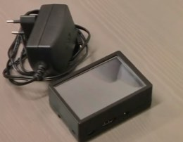
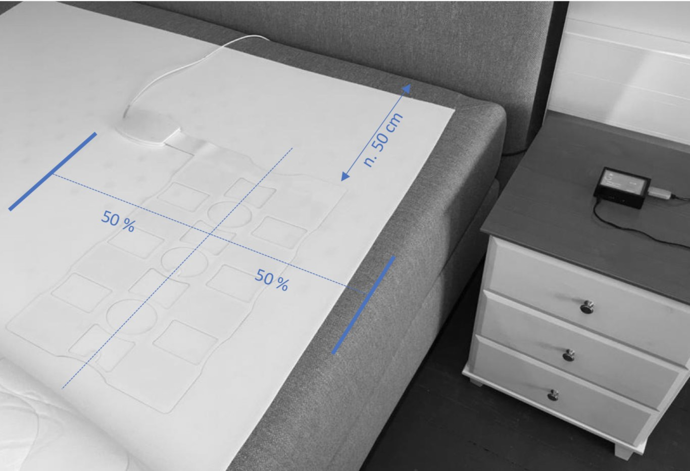
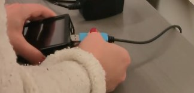
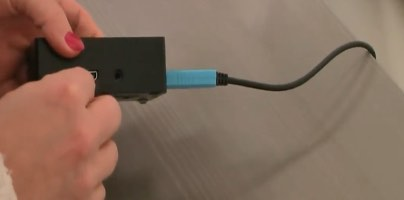
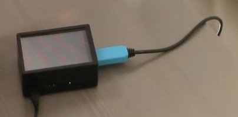
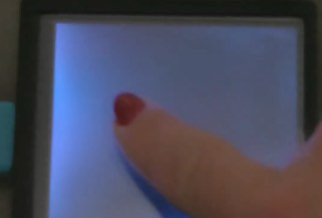
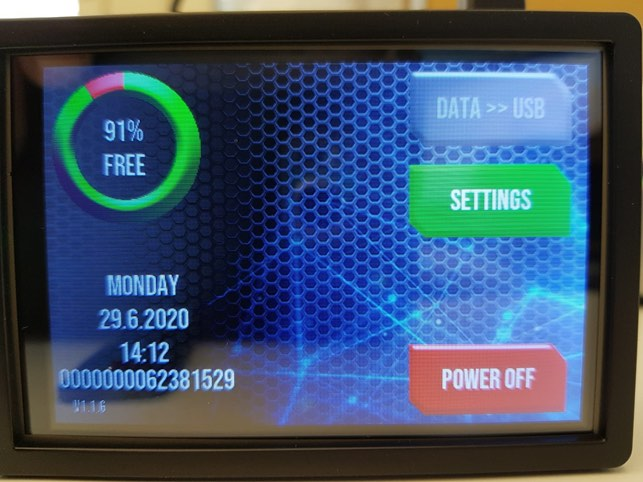

eBedSensor (Patient Materials)
General Device Introduction
The eBedSensor is a pressure sensor that is placed under a mattress of a bed and records vital signs (e.g. heart rate, breathing rate) and motion. This data is then used to calculate a range of metrics that can be used to better understand sleep conditions, such as time spent in bed, sleep stages, and sleep apnea.
How does this device look?
There are two parts using this sensor: the recording device named eBedSensor (Figure 1), and VitalTracker, a small touch-screen computer that stores the data (Figure 2). The eBedSensor should be placed under the mattress and connected to VitalTracker using a cable. The VitalTracker is then connected to a power socket using a USB cable, like when charging a phone. Only the power supply provided with the devices should be used as other power supplies can damage the devices.
| Figure 1:eBedSensor | Figure 2:VitalTracker |
What does it record?
The eBedSensor records your vital signs (e.g. heart rate, breathing rate) and motion (e.g. acceleration, rotation and position) when you sleep.
How is it used?
The eBedSensor is placed under a mattress on the slatted or cushion base and connected to the VitalTracker. VitalTracker is then plugged into a power source to begin recording. When you next go to bed, the eBedSensor will record your vital signs and movement. You can verify that data has been recorded by looking at the VitalTracker in the morning: the usage graph will have increased.
Data transfer protocol for patients
As a patient: do I need to do anything daily or all N days?
The eBedSensor must be placed under your mattress every night before sleep directly under where the patient sleeps as illustrated to the right. The eBedSensor can be placed on both slatted and cushion bed bases. Please also check that the VitalTracker is connected properly both to the eBedSensor and the power supply at all times. The device can be powered on continuously 24 hours a day, or if needed, switched off and on; recording shall continue automatically whenever the device is powered.

As a patient: do I need to do anything after each individual period of device / app use ended?
Every day before sleep, please ensure that the eBedSensor is placed properly under mattress pad. Ensure the VitalTracker is connected properly both to the eBedSensor and the power supply. Make sure that the main screen appears on the VitalTracker.
As a patient: do I need to do anything after my full periods of use of a specific device / app end?
No. Clinicians will transfer all the data stored on the VitalTracker at the end of the study period. Please pack away the BedSensor in the provided packaging and give it back to the researcher at the end of the study (either when you visit hospital or during the home visit).
Device How To / setup for wear
The eBedSensor (figure 1) is placed under the mattress of a bed and connected to a small digital recording device called a VitalTracker (figure 2). The VitalTracker records your vital signs and movement while you sleep and should be placed on a bedside table or another platform so that it remains on the same level of the eBedSensor. This will prevent the cable from breaking.
|  | |
| Figure 1 (eBedSensor): Note the position of the device. The cable running from the device is used to power it through a USB connection with the VitalTracker technology. | Figure 2 (VitalTracker): A illustrates the touchscreen to control the device; B is the power connection; and C is the USB port to power the eBedSensor. |
Placing the eBedsensor under your bed
Place the sensor under your mattress as shown in the picture below. However, the mattress in Figure 1 above should be of a homogeneous material, e.g. a foam mattress with thickness up to 15 cm would do fine. In case of a partly hollow and structured mattress like a spring-box mattress, the bed sensor should be placed in between a thin topping or covering mattress and the spring-box mattress.
| Figure 1: Typical mattress and bedding. | Figure 2: Device placed under mattress. |
The associated VitalTracker needs to be placed at approximately chest height to prevent damage to the cable. The cables can be directed towards the headboard of your bed as shown in Figure 1 below. Check that the pad is flat, and the cables are not bent.
|  |
| Figure 1: eBedSensor placement and cables. |
The next thing to connect is the VitalTracker. Place the cable from the bed sensor into the VitalTracker as shown.
|  | |
| Figure 1: Plug the USB end from the cable going from the eBedSensor into VitalTracker. | Figure 2: When also powered on (see the next Figure), touch screen shall activate. |
Then attach the power plug to the VitalTracker and plug it in to the socket.
|  |  | |
| 1. Attach the power plug to your wall. | 2. Attach the other end of the power cable to VitalTracker. | 3. Touch screen shall be activated when powered on. |
Ideally the VitalTracker should be place on a bedside cabinet or at the same level of the mattress if possible. If this is not possible, place it on the floor under your bed.
Powering on the VitalTracker
Make sure the device is connected to a power supply and the device will automatically begin recording data. Press the screen of the VitalTracker to turn it on (Figure 1) and a screen will appear as shown in Figure 2.
|  |  |
| Figure 1: Press the screen to turn it visible. | Figure 2: Options will be presented when on. |
The screen will turn off after a minute, and you can place the night cap over it to black out the dim backlight as illustrated below:
 |
 |
| Figure 1: Touch screen turns off automatically, but a dim backlight shall still be visible. | Figure 2: Place the separate night cap over the box to black out the backlight of screen. |
How can I get help with using this?
If you have any other questions or concerns, please contact your local study centre:
| Newcastle, United Kingdom | Rotterdam, Netherlands | Kiel, Germany | Muenster, Germany |
| Person Name Centre Name Location |
Person Name Centre Name Location |
Person Name Centre Name Location |
Person Name Centre Name Location |
What sort of a device / application is this, what is it for and how does it work?
eBedSensor is a bed sensor that record vital signs (such as heart rate) and movement while you sleep. There are two steps for setting it up:
| eBedSensor Placement Place the eBedSensor under your bed mattress to chest height as illustrated to the right (Figure N). The cables from the eBedSensor can be placed towards the headboard. Note: The device should not be bent. |
| VitalTracker Placement The VitalTracker should be connected to the eBedSensor via the provided cable and then connected to electricity. Note: The VitalTracker should be placed on your bedside or at the same height of the bed sensor. This ensures that the cables do not become damaged. |
 |
A short video illustrates these instructions in practice: VTT Bed Sensor.
What will I need to do before I can start using this?
You will need to physically place the device under your mattress and connect it to the provided VitalTracker as per the above instructions. Note also instructions given before when having different kind of mattresses in between the user and the sensor. Once connected to power VitalTracker will automatically begin recording.
Any account setup required?
There will be no account setup to use the eBedSensor.
Needs pairing with hub-device?
No pairing is required as the eBedSensor records data when turned on and connected to the VitalTracker.
Any configuration / assembly required?
There will be no configuration required to use the eBedSensor.
Troubleshooting/FAQ
The device / app seems to have stopped working: what should I do?
Battery?
The bed sensor does not contain any charging batteries, it is operating only when connected to the power supply cord with a USB connector.
Connectivity issues?
In case of non-functioning main screen, restart the device by disconnecting and (after a few seconds) reconnecting the power supply cord, which should enable the normal operation and automatic data recording. However, if you still see an error message on a screen of the VitalTracker or the touch screen does not seem to activate at all, send it to the research site.
Checking Bed Status
Please ensure each night that the eBedSensor is plugged into the VitalTracker following the setup guide.
Mattress Types
The bed sensor does not work optimally with some specific mattress types, which dampen the signal strength. Common mattresses that cause dampening issues contain non-homogenous structures, such as springs. Improvement on measurement conditions can be done by adding a topping mattress (or additional bed sheet) and place the sensor under it. This is not necessary in most of the cases, like e.g. a homogeneous foam rubber with thickness up to 15 cm.
Need to restart or log in again?
The eBedSensor can be turned off from the display of the VitalTracker. It can be restarted by switching off and from the power supply.
In exceptional cases, the power supply cord can also be disconnected directly without pre-selected power-off from the touch screen, however in very rare occasions this might damage the internal SD-card.
The VitalTracker recording will automatically turn on after a power failure and resume operation without user intervention.
Using the device / app is uncomfortable to me: what can I do?
Adjust wear style?
After each nights usage the eBedSensor may move and feel uncomfortable to sleep on in the following night. Please adjust eBedSensor to its default position each night as described above.
Device return
What do I do when a period of device use is over?
Yes. Turn the VitalTracker off from the power supply and remove the eBedSensor from under your mattress. Remove the connected cable from the eBedSensor and VitalTracker, and place both devices in a safe place until the device is returned.
Before the device is returned or disposed of: does any data need to be transferred?
Not applicable. All data will be transferred from the device by a member of the research study site.
Do I need to return the device somewhere?
Please contact the person that provided you with it to arrange further steps. You will have to return it by post – subject to further individual arrangement.